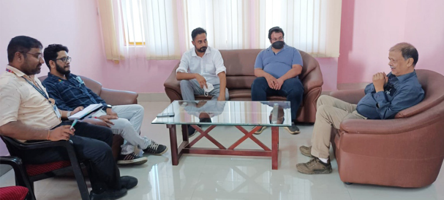
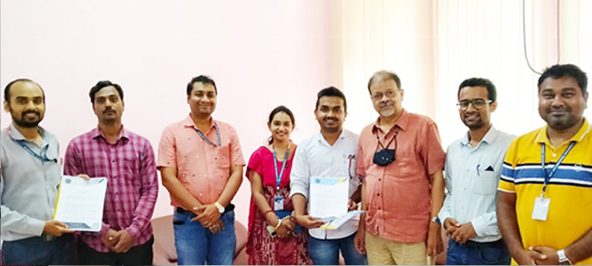
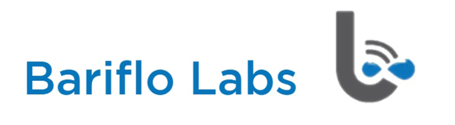
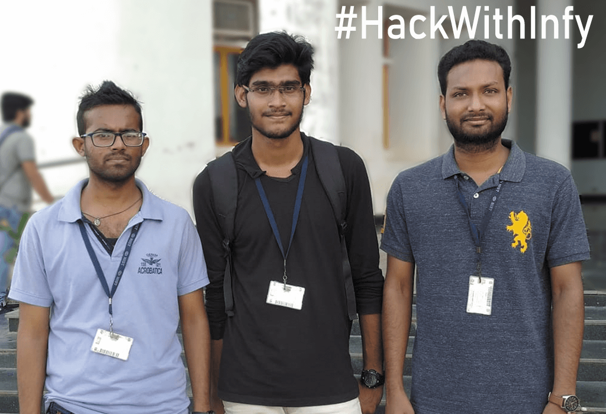
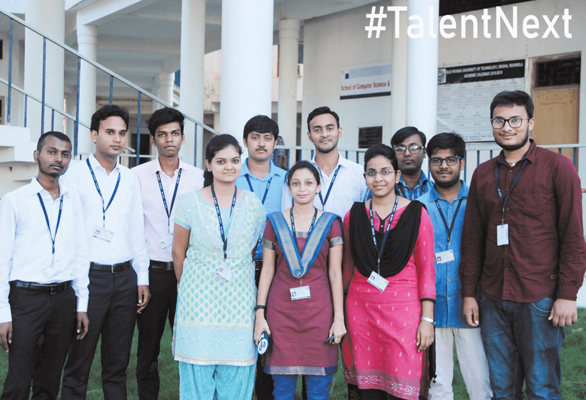

ANNOUNCEMENTS
- CHAIRMAN MESSAGE |
- FACULTY |
- STUDENTS |
- GALLERY |
- DOWNLOADS |
- CONTACT

| NIST Institute of Science and Technology (Autonomous) |
| Institute Park, Pallur Hills, Berhampur, Odisha |


THIS IS NIST
CAMPUS
ACADEMIC
RESEARCH
INCUVATIONS
COLLABORATIONS
CAREER DEVELOPMENT
STUDENT LIFE
ADMISSION 2023
INDUSTRY PATNERSHIPS
ACADEMIC COLLABORATIONS

COLLABORATIONS
NIST has always been grabbing opportunities where academia and industry come together in a win-win situation. It has been making consistent efforts to collaborate with renowned academic institutions and industries to provide world class exposure to the students. It emphasizes on the collaborative research funded by the Government and Industry funding agencies. The institute has built up strong industrial interaction with various industries for collaboration in research work. These eminent collaborations help the students acquire the knowledge, skills and aptitude required in our times for participation on a global level in terms of higher studies, placements, and entrepreneurship. These sponsored research programs have helped the institute create the infrastructure and strengthen the facilities in some of the emerging areas of technology. The Institute has also received numerous research grants, projects, special funding, travel funding, SDPs, FIST grant and scholarships from the DST, CSIR, AICTE and different companies.
INDUSTRY PARTNERSHIPS
NIST Institute Park is spread over 60 acres of which 4.3 lakh sq.ft. make academic space that houses many Centers of Excellence and international standard research laboratories wherein our researchers and faculty work, and where industries invest into our ideas. NIST has signed MoU with 15 industries for Rs 6.3 Crore in last five years and over 15 Research Scholars have worked in projects leading to their Ph.D work and Rs. 1.16 Crore on consultancy. The institute is collaborating with industries such as Sankalp Semiconductors, Sandhur and SunMoksha in the areas of Nano-technology and Renewal Energy. It has also collaborations with L&T Technology Services (LTTS) in the areas of IoT Solutions, AI, Data Science, Security, VLSI, 5G and Compute Vision.
The faculty of the institute maintain strong industrial links by undertaking consultancy assignments. This includes job of varied nature like troubleshooting, product and process development and design checks. The institute is doing collaborative research work with top Institute of India and abroad like IITs, NIT, NEERI, Nagpur, CMET, Pune, University of Hyderabad, University of California, Michigan State University, Stanford University, and NJIT, USA. MS from New Jersey Institute of Technology (NJIT), USA. NIST has established Centers of Excellence in partnership with Industry such as CADENCE, IBM, SAP Asia Pacific, L&T Technology Services, National Instruments, Texas Instruments, ARM, and WIPRO. The institute also plans to set up other centers of excellence like Data Science, Center of Mechatronics, Center of Image Processing & Cryptology, Center of Knowledge Engineering, Center of Industrial Automation Control, Center of Renewable Energy, and Center of Nano Technology.
IG Drones
- It is a technology service provider company that provides drone services for mapping, surveying, inspection, etc. in agriculture, disaster management, power transmission, hydrology, and other fields. IG drones have partnered with NIST for software product development and to indigenize drone production starting from design to prototyping and manufacturing. For the technology stack used in the drones, our faculty members and research students from multiple departments take part in the development of control algorithms and analytics platforms.

Pipli Technologies

- Pipli is a new age startup working in the domain of AI and ML to enhance customer engagement and organizational efficiency for their customers. They build models to predict consumer behavior from historical datasets. Pipli has setup a development center at NIST where some proprietary technology integration and process development takes place. An exclusive group of students and faculty supervisor work on the tasks assigned to them.
Protionix Technologies
- Popularizing STEM education among school children, Protionix has its footprint in 6 states of India. It manufactures robotics hardware kits, organizes STEM education events, and conducts robotics workshops in those states. Protionix was founded at NIST by two Mechanical Engineering Graduates of the 2018 batch. Currently, they have a development center at NIST that uses the fabrication facilities to develop educational toys.

Bariflolabs Private Limited

- Bariflolabs is an Industry 4.0 compliant startup providing SAAS and FAAS to the aquaculture industry. Its patented aquaculture pond management system and water purification system based on bubble plume aeration technology have made it stand out technologically. Just to mention that in its foundational days, it had started at NIST itself. Bariflolabs has a development center at NIST where UG and PG students are working on projects. It is also funding four PG seats in Engineering to allow students to continue industrial research and product development during the study.

Every year the institute also engages with major IT giants through contests such as Infy TQ, HackWithInfy, Wipro Talent Next and Wipro National Talent Hunt, to provide its students with learning, industrial exposure, and placements. There they learn conceptual and practical aspects of technology and inculcate the culture of rapid problem-solving and innovative thinking.


ACADEMIC COLLABORATIONS